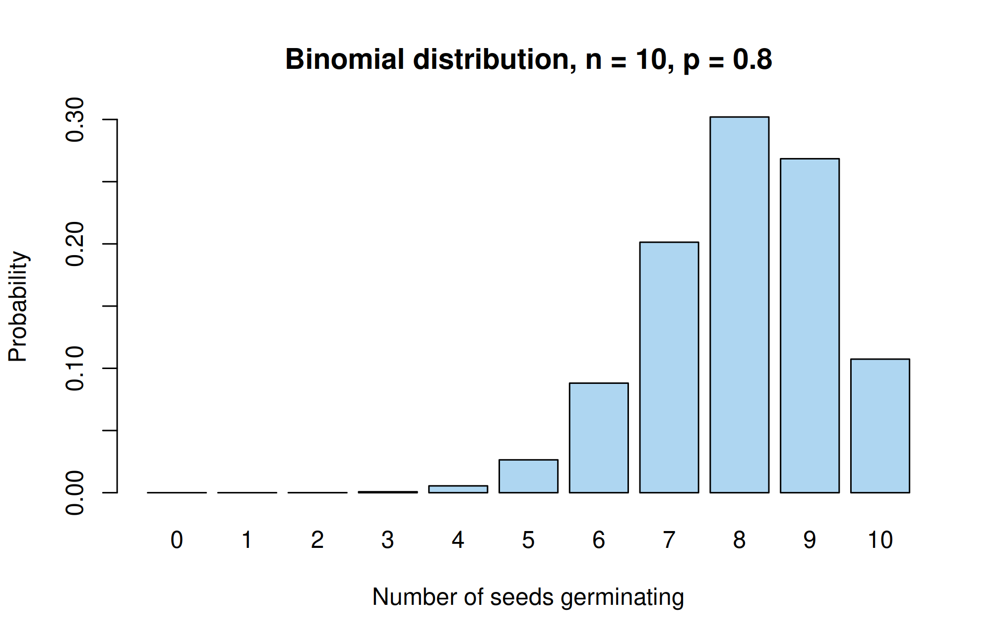
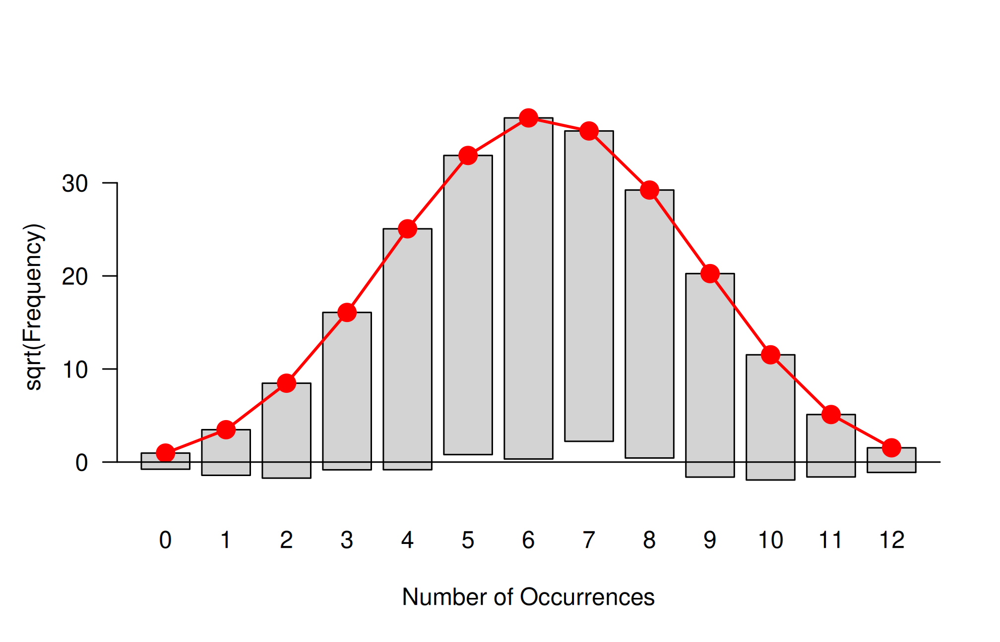
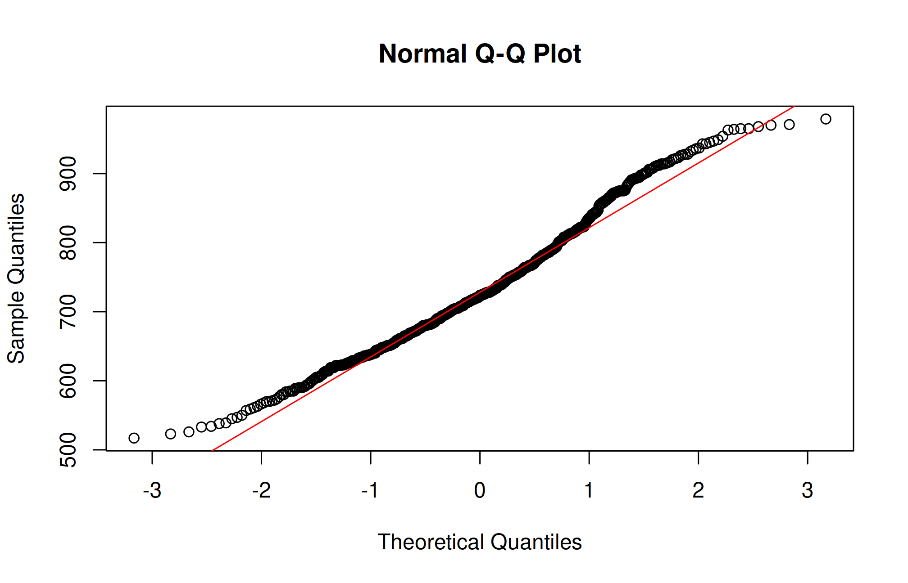

Use the d-p-q-r distribution functions, fit binomial, Poisson and normal distributions to data, test goodness of fit with the chi-square test after pooling classes, and compare candidate distributions.
A probability distribution describes how the values of a random variable are spread. Discrete distributions (binomial, Poisson) describe counts; continuous distributions (normal, log-normal, t, \(\chi^2\), F) describe measurements. In practice we ask two questions:
Fitting: if the data follow a certain distribution, what are its parameters?
Goodness of fit: do the data actually follow that distribution?
18.1 Distribution functions in R
For every standard distribution R has four functions, named by a prefix and the distribution’s name:
Prefix
Gives
Example (normal)
d
density (continuous) or probability \(P(X = x)\) (discrete)
dnorm(x, mean, sd)
p
cumulative probability \(P(X \le x)\)
pnorm(q, mean, sd)
q
quantile: the value \(x\) with \(P(X \le x) = p\)
qnorm(p, mean, sd)
r
random numbers
rnorm(n, mean, sd)
The names of common distributions are binom, pois, nbinom, geom, hyper, norm, lnorm, unif, exp, gamma, t, chisq and f.
# Binomial: P(X = 3) when n = 10, p = 0.2dbinom(3, size =10, prob =0.2)
[1] 0.2013
# Normal: P(X <= 1.96) for the standard normalpnorm(1.96)
[1] 0.975
# Critical values used in testsqnorm(0.975) # z for a two-sided 5% test
[1] 1.96
qt(0.975, df =12) # t with 12 df
[1] 2.179
qchisq(0.95, df =4) # chi-square with 4 df
[1] 9.488
qf(0.95, df1 =3, df2 =12) # F with (3, 12) df
[1] 3.49
The last four lines replace the statistical tables at the back of textbooks.
18.2 Binomial distribution
A random variable \(X\) follows a binomial distribution with parameters \(n\) and \(p\) if it counts the number of “successes” in \(n\) independent trials, each with the same probability of success \(p\):
Example 18.1 The germination percentage of a seed lot is 80%. If 10 seeds are sown in a pot, what is the probability that (a) exactly 8, (b) at least 8 seeds germinate?
1-pbinom(7, size =10, prob =0.8) # (b) the same, using pbinom
[1] 0.6778
barplot(dbinom(0:10, 10, 0.8), names.arg =0:10, col ="#AED6F1",xlab ="Number of seeds germinating", ylab ="Probability",main ="Binomial distribution, n = 10, p = 0.8")

18.2.1 Fitting a binomial distribution
To fit a binomial distribution to observed frequencies, estimate \(p\) from the sample mean, \(\hat p = \bar x / n\), and compute the expected frequencies \(N \cdot P(X = x)\), where \(N\) is the total frequency.
We use a classic data set: the number of boys in 6115 families with 12 children each, recorded in Saxony in the 19th century (Geissler’s data, available as Saxony in the vcd package).
library(vcd)
Loading required package: grid
obs <-as.vector(Saxony) # observed frequenciesx <-0:12# number of boysN <-sum(obs)n <-12xbar <-sum(x * obs) / Np_hat <- xbar / nc(N = N, mean = xbar, p_hat = p_hat)
N mean p_hat
6115.0000 6.2306 0.5192
expected <- N *dbinom(x, size = n, prob = p_hat)data.frame(boys = x, observed = obs, expected =round(expected, 1))
where \(O_i\) and \(E_i\) are the observed and expected frequencies in class \(i\). Under the null hypothesis that the data follow the fitted distribution, \(\chi^2\) has approximately a chi-square distribution with \(k - 1 - m\) degrees of freedom, where \(k\) is the number of classes (after pooling) and \(m\) is the number of parameters estimated from the data.
Note
The chi-square approximation needs expected frequencies that are not too small. A common rule is to pool adjacent classes until every expected frequency is at least 5.
Here the expected frequencies for 0 boys (0.9) and 12 boys (2.3) are below 5, so we pool them with their neighbours:
# Pool classes 0 and 1, and classes 11 and 12O <-c(sum(obs[1:2]), obs[3:11], sum(obs[12:13]))E <-c(sum(expected[1:2]), expected[3:11], sum(expected[12:13]))chisq_stat <-sum((O - E)^2/ E)k <-length(O) # number of classes after poolingdf <- k -1-1# one parameter (p) estimatedp_value <-pchisq(chisq_stat, df, lower.tail =FALSE)c(chi_square = chisq_stat, df = df, p_value = p_value)
The p-value is far below 0.05, so the binomial distribution does not fit these data. There are more families with very few or very many boys than the binomial model predicts. This is a well-known result: the probability of a boy varies from family to family, which violates the binomial assumption of a constant \(p\) and inflates the variance.
The goodfit() function of vcd fits the distribution and tests the fit in one step (it uses the likelihood-ratio statistic, which is close to Pearson’s):
gf <-goodfit(Saxony, type ="binomial", par =list(size =12))summary(gf)
Goodness-of-fit test for binomial distribution
X^2 df P(> X^2)
Likelihood Ratio 97.01 11 6.978e-16
rootogram(gf)

In the rootogram, bars (the square roots of the observed frequencies) hang from the curve of square roots of expected frequencies. If the fit were good, the bottoms of the bars would lie close to the horizontal line at zero.
18.3 Poisson distribution
The Poisson distribution describes counts of rare, independent events in a fixed interval of time or space, such as the number of insects per plant, weeds per quadrat or bacterial colonies per plate:
Its mean and variance are both equal to \(\lambda\).
18.3.1 Fitting a Poisson distribution
\(\lambda\) is estimated by the sample mean. The classic example is von Bortkiewicz’s data on the number of soldiers killed by horse kicks per Prussian army corps per year (200 corps-years):
# Variance of the data: close to the mean, as a Poisson distribution requiressum(obs * (x - lambda)^2) / (N -1)
[1] 0.611
expected <- N *dpois(x, lambda)expected[5] <- N *ppois(3, lambda, lower.tail =FALSE) # last class is "4 or more"data.frame(deaths = x, observed = obs, expected =round(expected, 2))
The p-value is large, so the Poisson distribution fits the data well. The same conclusion follows from goodfit():
summary(goodfit(HorseKicks, type ="poisson"))
Goodness-of-fit test for poisson distribution
X^2 df P(> X^2)
Likelihood Ratio 0.8682 3 0.8331
Tip
Counts of insects, weeds and diseased plants often have a variance much larger than the mean (over-dispersion) because individuals cluster. The negative binomial distribution then fits better: use goodfit(x, type = "nbinomial") or fitdistrplus::fitdist(x, "nbinom").
18.4 Normal distribution
The normal distribution with mean \(\mu\) and standard deviation \(\sigma\) has density
Example 18.2 Plant height of a variety is normally distributed with mean 80 cm and standard deviation 6 cm. What proportion of plants are (a) taller than 90 cm, (b) between 75 and 85 cm? (c) Below what height are the shortest 10% of plants?
Solution
pnorm(90, mean =80, sd =6, lower.tail =FALSE) # (a)
[1] 0.04779
pnorm(85, 80, 6) -pnorm(75, 80, 6) # (b)
[1] 0.5953
qnorm(0.10, mean =80, sd =6) # (c)
[1] 72.31
18.4.1 Fitting a normal distribution
We use the rice uniformity trial of Gomez and Gomez (1984) (gomez.rice.uniformity in agridat): a field of rice variety IR8 was harvested in 648 plots of 1 m × 1 m and the grain yield (g/m2) of each plot was recorded.
For a chi-square test with continuous data, group the data into classes and compute the expected frequency of each class from the fitted normal distribution:
breaks <-c(-Inf, seq(560, 920, by =40), Inf)O <-table(cut(y, breaks))P <-diff(pnorm(breaks, mu_hat, sigma_hat))E <-length(y) * Pcbind(observed = O, expected =round(E, 1))
The chi-square test rejects the normal distribution (p < 0.001). The table shows why: there are fewer very low yields and more high yields than a symmetric normal curve predicts, i.e. the distribution is slightly skewed to the right.
18.4.2 Other tests of normality
Several tests are available for normality. With large samples they detect even small departures from normality, so always look at a graph too.
shapiro.test(y) # Shapiro-Wilk
Shapiro-Wilk normality test
data: y
W = 0.98, p-value = 0.0000004
Warning in ks.test.default(y, "pnorm", mu_hat, sigma_hat): ties should not be
present for the one-sample Kolmogorov-Smirnov test
Asymptotic one-sample Kolmogorov-Smirnov test
data: y
D = 0.059, p-value = 0.02
alternative hypothesis: two-sided
Warning
When the mean and SD are estimated from the same data, the ordinary Kolmogorov–Smirnov p-value is too large (the test is conservative). The Lilliefors correction, nortest::lillie.test(y), or the Shapiro–Wilk test should be preferred for testing normality.
qqnorm(y); qqline(y, col ="red")

The Q–Q plot is nearly straight in the middle but curves at both ends, showing a slight right skew. With 648 observations, the tests detect this small departure.
18.5 Comparing candidate distributions with fitdistrplus
The fitdistrplus package (Delignette-Muller, Dutang, and Siberchicot 2023) fits distributions by maximum likelihood and compares them. Here we compare the normal and log-normal distributions for the rice yields:
Fitting of the distribution ' norm ' by maximum likelihood
Parameters :
estimate Std. Error
mean 733.45 3.733
sd 95.03 2.640
Loglikelihood: -3871 AIC: 7745 BIC: 7754
Correlation matrix:
mean sd
mean 1 0
sd 0 1
The log-normal distribution has the smaller AIC and smaller Kolmogorov–Smirnov, Cramér–von Mises and Anderson–Darling statistics, so it describes these yields slightly better than the normal distribution.
18.6 Live R laboratory
Fit a binomial distribution and test the fit
Edit the code, then select Run R. The first run downloads R into your browser and may take a little time. Copy code lets you use the example in RStudio.
# Number of boys in 6115 families of 12 children (Geissler's Saxony data)obs <-c(3, 24, 104, 286, 670, 1033, 1343, 1112, 829, 478, 181, 45, 7)x <-0:12; N <-sum(obs)p_hat <-sum(x * obs) / N /12expected <- N *dbinom(x, 12, p_hat)round(cbind(boys = x, observed = obs, expected = expected), 1)# Pool classes so that every expected frequency is at least 5O <-c(sum(obs[1:2]), obs[3:11], sum(obs[12:13]))E <-c(sum(expected[1:2]), expected[3:11], sum(expected[12:13]))chi <-sum((O - E)^2/ E); df <-length(O) -2c(chi_square = chi, df = df, p_value =pchisq(chi, df, lower.tail =FALSE))
Investigate. Which classes contribute most to the chi-square? Compute (O - E)^2 / E and explain why the binomial model fails for these families.
18.7 Practical 20 and exercises
A pesticide kills 70% of the insects it is sprayed on. For a group of 15 insects, find the probability that (a) exactly 10, (b) at most 8 are killed.
The number of weeds per quadrat follows a Poisson distribution with mean 2.5. Find the probability that a quadrat has no weeds.
Fit a Poisson distribution to the counts in the InsectSprays data for spray C and test the goodness of fit. Repeat for all sprays together. Explain the difference.
Fit normal and log-normal distributions to the Yield of the plrv data (agricolae) for the locality LM-02 and compare them.
Historical Insights
Siméon Denis Poisson published his distribution in 1837. In 1898 Ladislaus von Bortkiewicz showed that the number of Prussian cavalrymen killed by horse kicks followed it closely, in a book titled The Law of Small Numbers.
18.8 Chapter Summary
Fill in the blanks
Answers are given at the end of the chapter.
In R, the prefix d gives the density or probability, p the cumulative probability, q the __________ and r random numbers.
The mean of a binomial distribution is __________.
For a Poisson distribution the mean equals the __________.
Counts with variance much larger than the mean show __________.
Classes with expected frequencies below __________ are pooled before a chi-square test.
The df of a goodness-of-fit test are \(k - 1 - m\), where \(m\) is the number of estimated __________.
When the mean and SD are estimated from the data, the __________ correction of the K–S test should be used.
fitdist() belongs to the package __________.
Short-answer questions
State the conditions under which the binomial distribution applies.
How is a Poisson distribution fitted to observed frequencies?
Explain how degrees of freedom are found in a goodness-of-fit test.
Why do large samples often reject normality?
What is a rootogram?
Numerical and conceptual questions
Answers are given at the end of the chapter.
A pesticide kills 70% of insects. For 15 insects, find \(P(X = 10)\) and \(P(X \le 8)\).
Weeds per quadrat follow a Poisson distribution with mean 2.5. Find the probability of a quadrat with no weeds.
A binomial distribution is fitted to 13 classes, which are pooled into 11. Find the df of the chi-square test.
For a fitted normal distribution with 11 classes, find the df.
One parameter (\(p\)) estimated; by Equation 18.3, \(11 - 1 - 1 = 9\).
Two parameters estimated; \(11 - 1 - 2 = 8\).
Delignette-Muller, Marie-Laure, Christophe Dutang, and Aurelie Siberchicot. 2023. Fitdistrplus: Help to Fit of a Parametric Distribution to Non-Censored or Censored Data. https://lbbe.univ-lyon1.fr/fr/fitdistrplus.
Gomez, Kwanchai A., and Arturo A. Gomez. 1984. Statistical Procedures for Agricultural Research. 2nd ed. New York: John Wiley & Sons.